ThirdSpace: MSU 2026 Designathon Award Winner, Best Prototype
Connecting people through proximity and shared interests
Inspired by my prior communication research, I wanted to address the issue of lacking access to community in environments that limit mobility. This UI prototypes a public service that connects people with similar interests based on proximity, enabling natural friendships to develop through shared location-based experiences.
Inspiration
Our main conversation before starting active development was our primary source of inspiration, along with the talk by Emily Lin and Michelle's extensive prior research on mobility and access to community storytelling networks. The part about breaking down social barriers with a common goal really resonated with us — it became our philosophical anchor throughout the project.
Problem Statement
Modern life has made it increasingly difficult to form organic friendships outside of pre-existing social structures. Dating apps facilitate romantic connection; LinkedIn facilitates professional connection, but no platform addresses the quiet loneliness of living near potential friends you never encounter. Access to community is further constrained by mobility, if you cannot easily get around your neighborhood, your storytelling networks shrink. ThirdSpace sets out to close that gap by leveraging proximity and shared interest to lower the barrier to connection.
How We Built It
Our process began with a roughly three-hour conversation. While we had a LOT of ideas, it was lacking a specific direction, until Emily Lin's talk. Once we had direction, we spent the next few hours at the whiteboards. Our first planning phase captured the essence and philosophy of what we were building, a thesis to act as a lighthouse throughout development. Sitemaps and information architecture followed. Projects without passion or direction can fizzle out, but prior research allowed us to group elements, create connections between pieces of information, and develop coexisting systems. Finally, using our sitemaps, we sketched low-fidelity wireframes. Some screens, particularly the discover panel, took a few iterations. After pre-production, we moved to Figma for core design decisions: font, colors, and component language. We added a checklist to mark what needed to be created and what we could leave out.
User Needs & Objectives
Users need a low-pressure way to meet people who share their interests and live nearby. They want group contexts rather than one-on-one cold introductions, and they want to meet in public, familiar spaces. Trust and safety are paramount, especially for users who may already feel isolated. Our objectives were to design a platform that felt warm and community-oriented rather than transactional, with real places and real accountability built in.
Prototype Screens & Map Feature Demo
The screens below walk through the full user journey, from onboarding and interest selection, through group discovery and location assignment, to the proof-of-life message board. Swipe through each screen, and watch the prototype demo to see the map feature in action. The final slide shows a walkthrough of the live Designathon presentation.
View Media
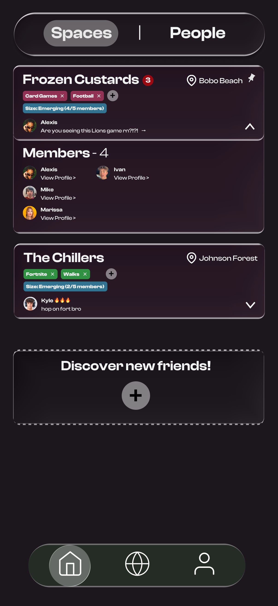
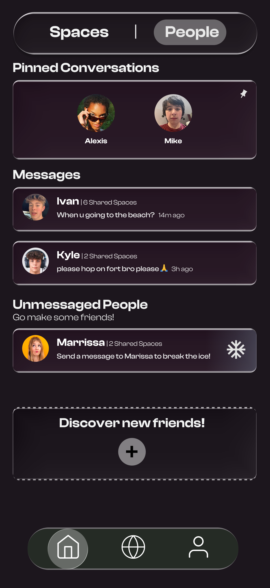
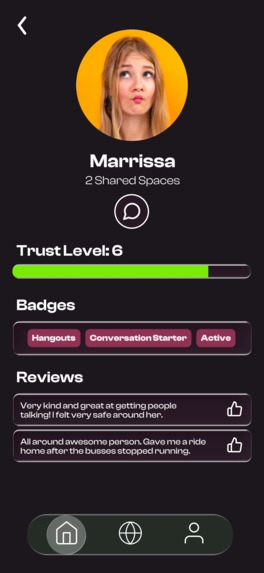
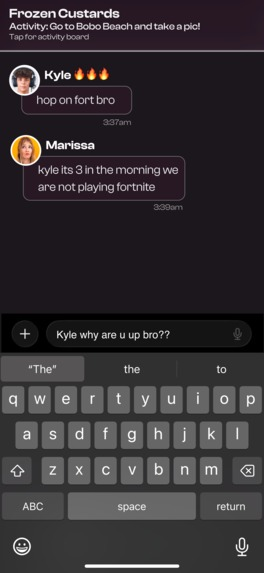
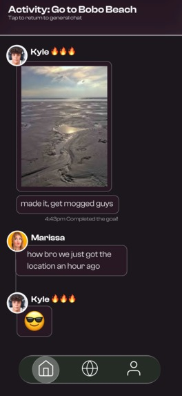
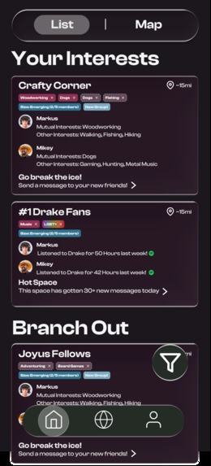
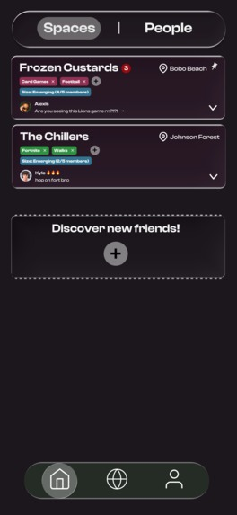
Challenges
Coming from different majors (XA and Information Science), there was a learning curve getting to know each other and how we could best use our strengths. Scope creep is real, and the biggest risk to time-based design challenges like this. Meeting people from the internet has a bad rep for a reason: developing the community trust score and letting the platform moderate itself was a difficult feature to plan for. Adding safety features like the filter and profile badges helped alleviate some potential concerns.
Accomplishments
The map toggle view was a last-minute addition originally thought to be out of scope, while it's a little visually buggy, the effect really sells the gamification aspect and shows the user the groups and friends they could make.
What We Learned
Pre-production and proper planning is very important, however you can get caught in an endless loop of adding features, leading to a cramped and overscoped project. For every 3 ideas you put down in pre-production, removing or merging 2 of them can be really beneficial. This project would not have happened if Ishan and I hadn't been passionate about this subject, this is what can happen when people with similar interests share a goal, much like the app itself. For all the Figma users: use components. They are extremely helpful at making prototypes and removing clutter. Test your prototype on the target device (mobile). Our biggest remaining issue is that some text is quite small, this could have been solved by testing screens on their intended platform.
What's Next for ThirdSpace
A more polished, portfolio version will be created and shared in the coming weeks. Perhaps even a functional version of the app down the road would be a unique project.
Design Process: Wireframes
Below are the early-stage whiteboard sessions and hand-drawn wireframes from the Designathon sprint. These show the information architecture brainstorm, the anatomy of a Space, and early screen layout thinking before anything went into Figma. Feedback from Emily Lin shaped our iterations between these stages.
View Low-Fidelity Prototypes
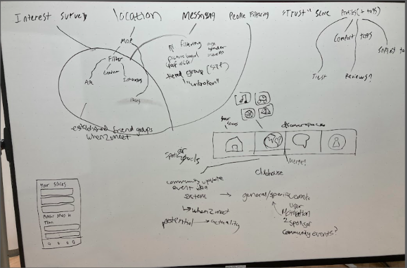
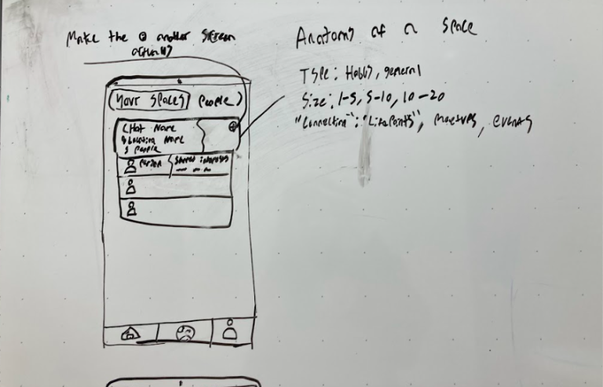
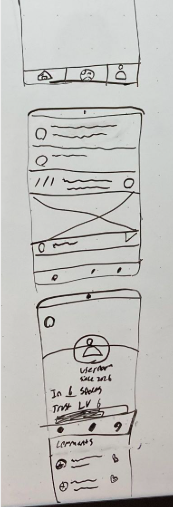
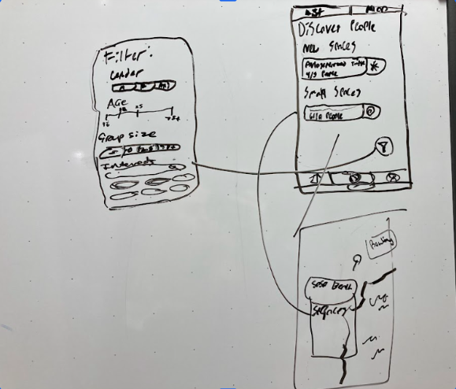
Try the interactive prototype Open in Figma →
Methods & Tools
- Whiteboard ideation
- Low-fidelity wireframing
- Information architecture
- Figma
- Interactive Prototyping
Outcomes
MSU Designathon 2026 — Best Prototype High-fidelity Figma prototype Sitemaps & information architecture User flow documentation
The Team
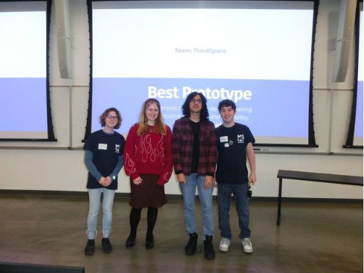
ThirdSpace team — Michelle Parson and Ishan Sandu accepting award for Best Prototype at MSU Designathon 2026 Award Ceremony